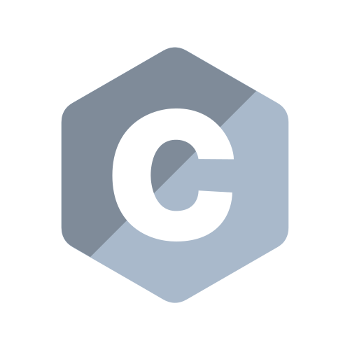


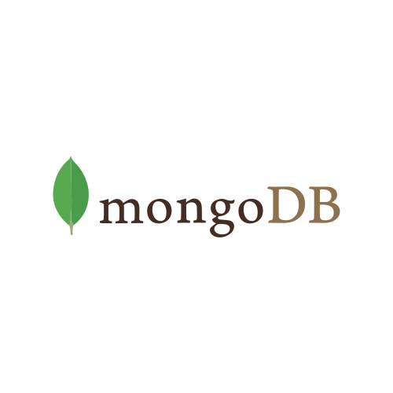


Expense Tracker
The expense tracker project was my second project working on react after the counter project. Both being my own projects I decided to dive deeper into the complexity of react. I explored the passing of data across and between components using props and contexts to connect my application.
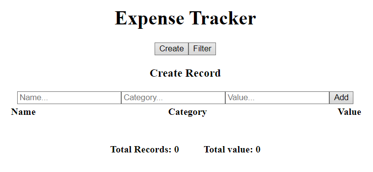
Key Features
- Add expenses
- Filter expenses based on name category and value
- Switch between create and filter for a clean UI
- Calculate and display the total records and sum of values
Challenges
Challenges as mentioned before included correctly and efficiently passing data around to access where needed
Outcome
Overall this project was actually quite challenging as it was programming in a way I never had to before which also included the planning stage before the developing, making sure I knew the structure before commencing
Future improvements
In the future I could definitely add the ability to delete and edit records similar to how I did this in my to-do list project. As well as improve on my CSS as this is lacking on the project.
Link to repositoryImage of the filter component
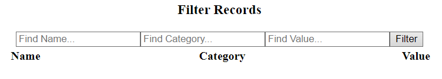
Image of records
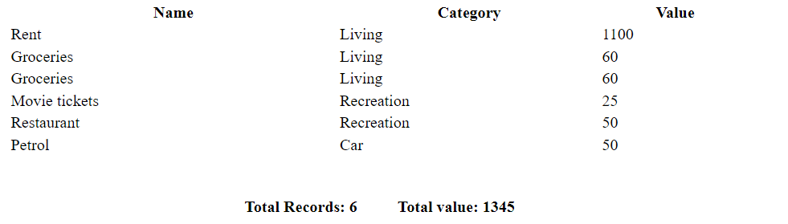
Image of filter working
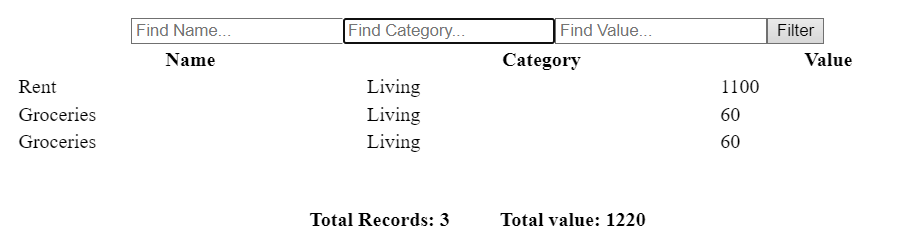
Conway's Game of life
A mathematical simulation exploring cellular automata, developed as part of a research essay. This Java-based implementation allows users to manually configure game states or generate random patterns, analyzing how different setups evolve over time. The project highlights the intersection of mathematics and computer science while demonstrating fundamental programming concepts.
Key Features
- Manual & Random Input: Users can define custom starting states or let the program generate random configurations.
- Automated Data Collection: The program records outcomes to analyze different patterns.
- Efficient Rule Implementation: Handles survival, death, and reproduction rules using structured logic.
Challenges
- Abstracting the game’s mechanics into functional code (~350 lines).
- Implementing complex rule-based logic with nested loops and conditionals.
- Ensuring accurate data collection for research purposes.
Outcome
- Successfully demonstrated how programming can be used for mathematical research.
- Gained insights into Conway’s Game of Life and refined problem-solving skills.
- Strengthened ability to translate theoretical concepts into working code.
Future Improvements
- Implementing a graphical user interface (GUI) for better visualization.
- Optimizing performance for larger grid sizes and longer simulations.
- Exploring multi-threading for improved efficiency.
Picture of array used for grid
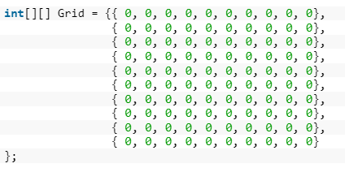
Picture of some of the data gathered
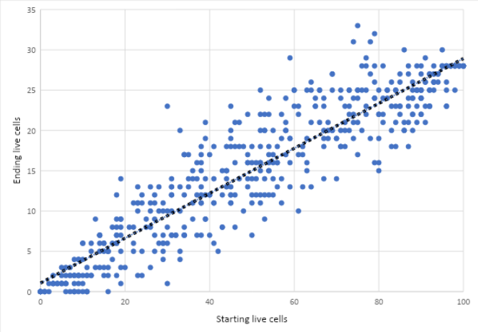
Quiz Maker
A team-based project designed to create an interactive quiz-making and taking system with automatic grading and database integration. This experience simulated a real-world development environment, emphasizing teamwork, version control, and structured project planning.
Key Features
- Create & Take Quizzes: Supports free-response and multiple-choice questions.
- Automated Grading: System automatically marks submitted quizzes.
- Database Integration: Stores quizzes and user results.
- Advanced Git Version Control: Managed collaboration efficiently.
- Unit Testing: Ensured core functionality was reliable.
Challenges
- Managing version control and team coordination in a group of five.
- Handling communication issues and incomplete contributions from some teammates.
- Ensuring smooth Git collaboration, avoiding versioning conflicts.
Outcome
- Achieved 85% functionality, including quiz creation, database storage, and testing.
- Learned the importance of clear communication and structured planning.
- Strengthened skills in collaborative development and problem-solving under pressure.
Future Improvements
- Implementing better planning structures, such as roadmaps for clearer task delegation.
- Enhancing team communication with scheduled meetings and structured updates.
- Using UML diagrams and flowcharts to improve design clarity and workflow efficiency.
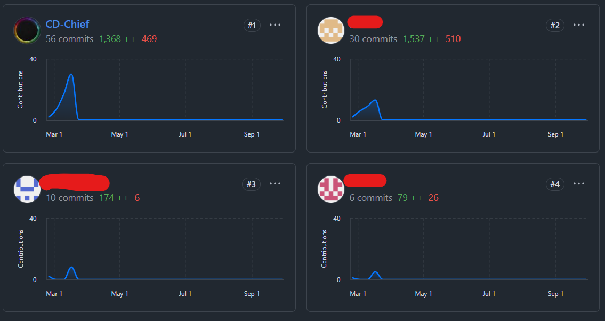
Example of Javadoc used
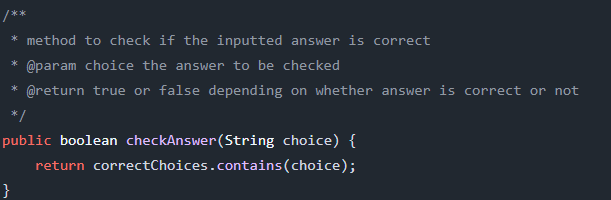
*Not able to link repository as it under the universities private organisation
AI Hunter
This project, AI Hunter, was developed during my first hackathon in Sheffield as part of a team of four. The idea I proposed was an AI that adapts to the player's movements and actions while trying to catch them. Although we had plans for additional mechanics, such as items (e.g., flashbangs) to create gaps between the player and the AI, we were only able to implement the AI’s adaptive chasing behavior within the hackathon timeframe.
We built the project in Python using PyTorch and Pygame. It was our first time using these technologies, and for most of us, our first hackathon experience.
Key Features
- AI Pathfinding & Adaptation: The AI learns from the player's movement patterns and adjusts accordingly.
- Real-time Pursuit Mechanics: The AI dynamically chases the player based on learned behaviors.
- Built with Python, Pygame, and PyTorch: Used for game logic, rendering, and AI learning respectively.
Challenges
- Skill-Level Variations: As we were unfamiliar with each other’s abilities, task allocation was initially difficult. However, I was able to assess our strengths over time, which helped improve our workflow.
- Git Workflow Issues: We encountered confusion with Git pushes and merges, which led to conflicts. This was resolved by establishing a structured Git workflow.
- First-Time Use of Pygame & PyTorch: We had to learn both libraries on the spot, which slowed development but was a valuable learning experience.
- Task Delegation: I realized the importance of overseeing everyone’s progress to prevent bottlenecks where someone was waiting too long for dependent code.
Outcome
- Successfully built a working AI that adapts and chases the player.
- Learned how to collaborate efficiently in a hackathon setting with limited time.
- Gained experience with Python, PyTorch, Pygame, and Git version control in a team environment.
- Improved my ability to delegate tasks and ensure that teammates weren’t blocked by dependencies.
Future Improvements
- Implementing items and mechanics to help players evade the AI, such as flashbangs or obstacles.
- Enhancing the AI learning algorithm for more sophisticated adaptations.
- Improving the game visuals and UI for a better player experience.
- Refining team coordination and Git workflow for smoother collaboration in future projects.
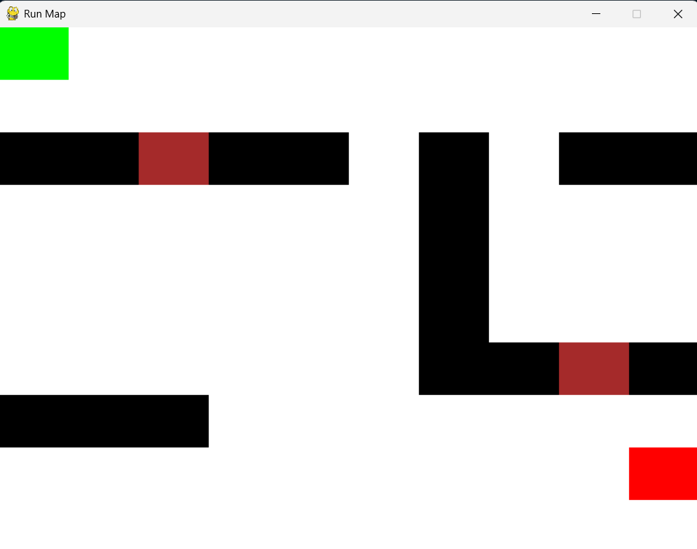
Here you can see the black blocks being walls, green is the player and light red is the hunter. The dark red represents a door
Link to repositoryCounter
A simple yet effective React-based counter application designed to reinforce fundamental React concepts such as state management and component interaction. The app allows users to increment or decrement the count with predefined buttons or a custom input, updating the display in real time.
Key Features
- Multiple Increment Options: Buttons to increase or decrease the counter by 1 or 10.
- Custom Input Field: Users can enter a number to modify the count dynamically.
- Real-time Updates: The displayed count updates instantly with every interaction.
Challenges
- Ensuring the layout scaled properly as numbers increased.
- Managing CSS styling to keep the interface clean and uncluttered.
- Focusing on React fundamentals, prioritizing functionality over UI design.
Outcome
- Served as my first hands-on React project, building a solid foundation in state management and component-based development.
- Successfully implemented key React concepts, making later projects like the Expense Tracker smoother.
- Provided valuable experience despite its simplicity, acting as a stepping stone for more advanced applications.
Future Improvements
- Enhancing the UI/UX design, addressing scaling issues for large numbers.
- Adding animations or visual feedback for a more interactive user experience.
- Expanding functionality, such as session storage to retain the counter value between page reloads.
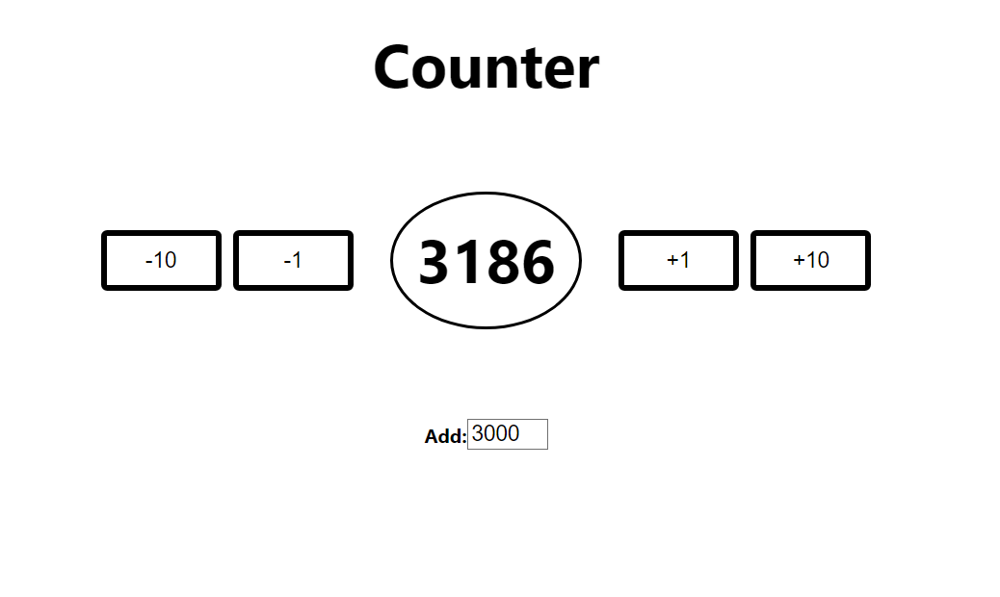
This (Portfolio) Website
I originally created a portfolio website back in high school, but it was a simple page with just an "About Me" section and contact details. Fast forward to June 2024, I wanted a better way to showcase my projects and experience without cluttering my CV. This led me to revisit the portfolio idea and work on a more complete version during my holidays after completing two other projects.
Key Features
- Responsive Design: Ensures the site looks good on all devices, from desktops to mobile phones.
- Interactive Elements: Utilizes JavaScript for dynamic content and user engagement.
- Project Showcase: Highlights key projects with detailed descriptions and images.
- Navigation Menu: Allows users to easily jump between sections of the site.
Challenges
- Design Consistency: Ensuring a consistent look and feel across all pages and elements.
- Responsive Layout: Making the site look good on all screen sizes without sacrificing content or design.
- Interactive Elements: Implementing JavaScript features to enhance user experience and engagement.
Outcome
- Successfully created a portfolio website to showcase my projects and skills.
- Learned valuable lessons in web design, responsive layout, and user experience.
- Developed a minimalistic design that emphasizes content and user interaction.
Future Improvements
- Adding a blog section to share insights, tutorials, and project updates.
- Enhancing the project showcase with more interactive elements and detailed case studies.
- Adding dark mode or theme customization for better personalization.
Blog Website

This blog website project was an assignment that involved showcasing various computer security practices, including authentication, encryption, and event logging. The app was built using Flask and utilized SQLite for database storage, including user information and event logs. It was my first experience with Flask and Bootstrap, and I learned a lot throughout the process by integrating these technologies.
Key Features
- Authentication & Authorization: Implemented user login, registration, and authorization with RBAC.
- Strong Password Enforcement: Ensured passwords are hashed and required to meet security standards.
- Multi-Factor Authentication (MFA): Added an extra layer of security for user accounts.
- CAPTCHA & Input Validation: Prevented spam and ensured valid input from users.
- Event Logging: Stored important actions and events in the database for tracking.
- Symmetric Encryption: Used encryption to protect sensitive data in the application.
Challenges
- Learning Flask: This was my first experience with Flask, so it required time to understand its structure and functionality.
- Database Integration: Setting up SQLite to store user data, passwords (hashed), and event logs was challenging, especially while ensuring security.
- Integrating Multiple Security Features: Combining authentication, MFA, RBAC, encryption, and input validation required careful attention to detail.
- Learning Bootstrap: Implementing a responsive layout with Bootstrap was new and required research and experimentation.
Outcome
- Successfully developed a fully functional blog website with security features such as authentication, encryption, and event logging.
- Gained hands-on experience with Flask, Bootstrap, and SQLite, which are now essential tools in my web development toolkit.
- Delivered a secure web application that incorporated several best practices for computer security.
Future Improvements
- Hosting the website online for broader access.
- Adding a distinguishing factor to make the blog stand out from other similar websites.
- Enhancing the UI and functionality to make the blog more interactive and user-friendly.
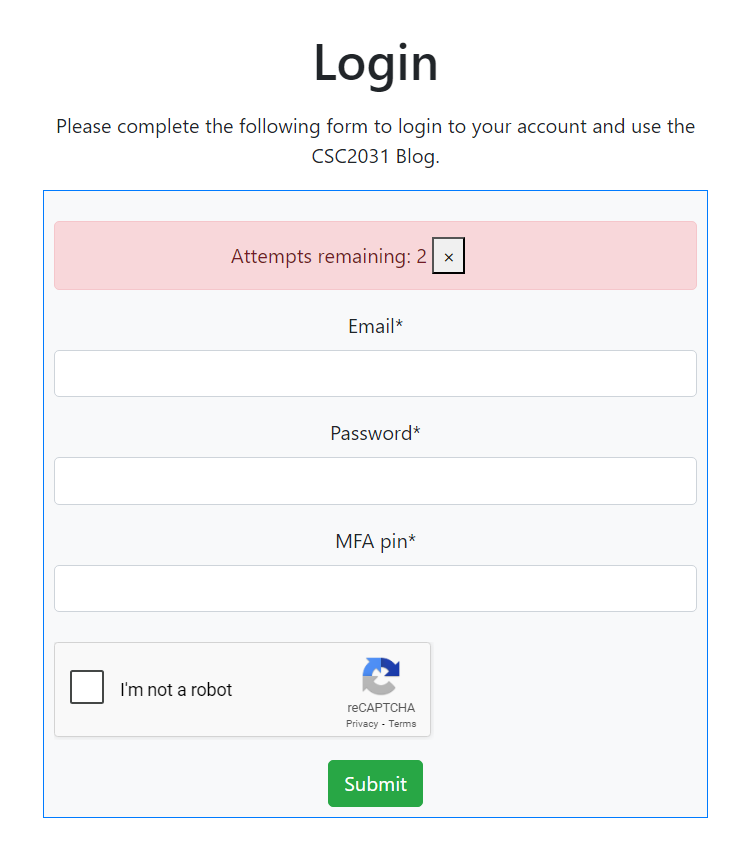
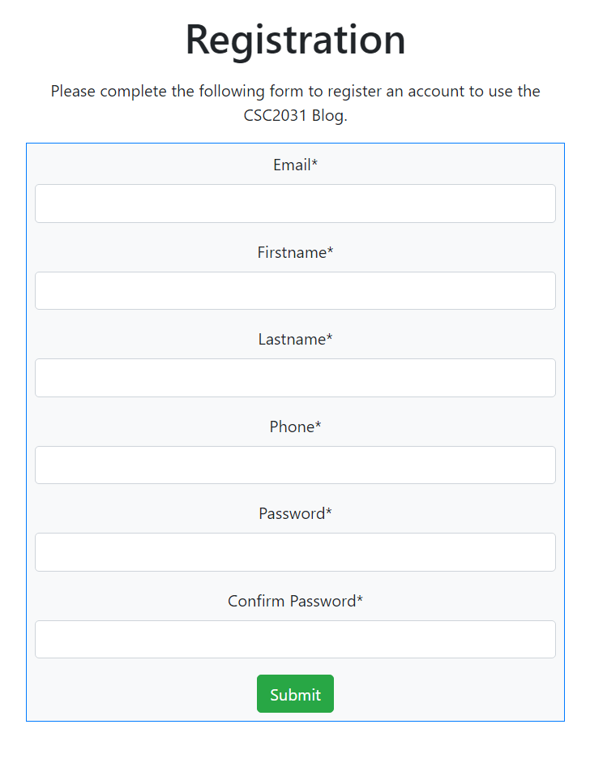
*Not able to link repository as it under the universities private organisation
To-do List
A simple yet interactive to-do list application designed to help users manage their tasks efficiently. Built as an introduction to web development, this project reinforced my understanding of front-end technologies while allowing me to experiment with UI enhancements for better user experience.
Key Features
- Task Management: Add, mark as complete, and delete tasks individually.
- Interactive UI: Hover effects to highlight tasks dynamically.
- Real-time Updates: Instantly reflects task additions and modifications.
Challenges
- Stepping out of my comfort zone into web development.
- Balancing functionality and UI design, experimenting with CSS.
- Ensuring smooth task interactions while keeping the code efficient.
Outcome
- Built a fully functional and visually responsive to-do list app.
- Gained confidence in front-end development and interactive UI design.
- Strengthened understanding of event handling and DOM manipulation.
Future Improvements
- Database integration to save tasks and user data.
- Login system for persistent task tracking across devices.
- Additional sorting and filtering options for better task organization.
Example
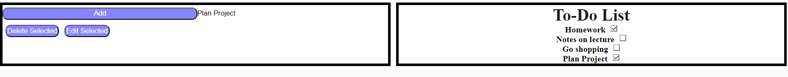
Select example
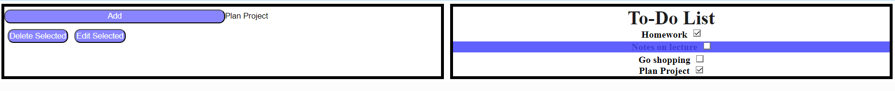
Delete example
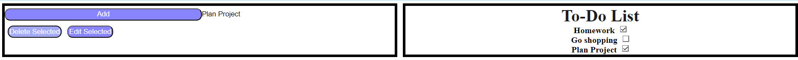
Edit example
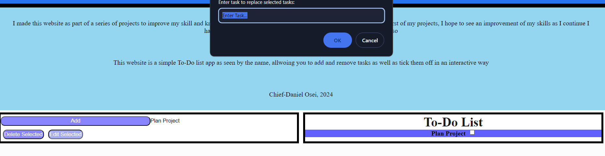
Film Studio Database
A command-line application developed in Java to create a reporting system for an investor in the film industry. The system handles data related to film studios and their productions, facilitating efficient information storage, retrieval, and reporting.
Key Features
- Store and Retrieve Film Data: Manage information about various films produced by studios.
- FilmStudio Class: Tracks studio information and computes details such as the longest film produced.
- User-Friendly Console Menu: Simplifies data entry and reporting tasks for users.
Challenges
- Ensuring effective version control and maintaining a clean codebase throughout development.
- Managing complex data structures while implementing features like recursion in input methods.
- Debugging with minimal issues, making the project largely bug-free despite its complexity.
Outcome
- Successfully implemented all core functionalities, including film studio data entry and report generation.
- Implemented recursion to enhance input handling, a key technical achievement.
- Achieved minimal bugs, demonstrating strong coding practices and project management.
Future Improvements
- Adding a Graphical User Interface (GUI) for better user interaction and ease of use.
- Implementing file handling capabilities to allow users to save and load data.
- Integrating with an online database, such as IMDb, to pull up-to-date film data automatically.
*Not able to link repository as it is under the universities private organisation
Film addition example
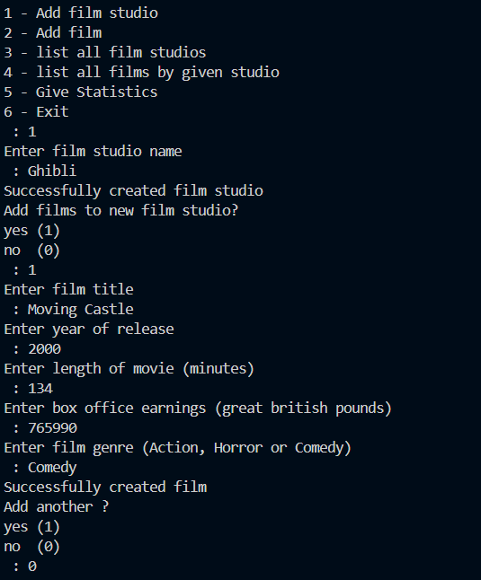
Film list example
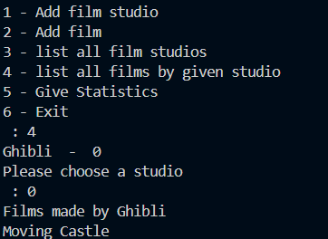
Film statistics example
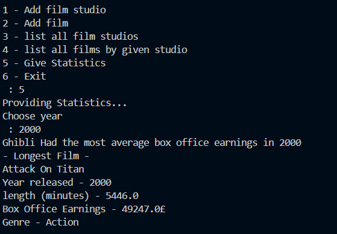
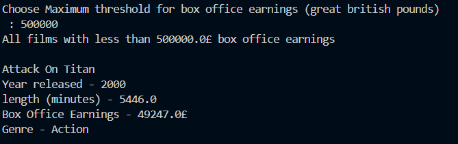
*Not able to link repository as it under the universities private organisation
Lua Game
A collaborative project where my team and I aimed to develop a tycoon-style game in Roblox using Lua in 2021. As the sole programmer, I implemented core game mechanics while coordinating with teammates focused on world-building. This experience sharpened my technical skills and strengthened my ability to collaborate in a team-oriented environment.
Key Features
- Lua-based Game Mechanics: Implemented core gameplay features using Lua within the Roblox engine.
- Team Collaboration: Worked closely with designers to integrate their vision into functional mechanics.
- Project Management: Balanced learning a new language while delivering key game components.
Challenges
- Learning Lua from scratch while working within the Roblox game engine.
- Translating teammates' world-building designs into functional game mechanics.
- Maintaining clear communication to align coding progress with the overall creative vision.
Outcome
- Successfully implemented most core mechanics, despite the ambitious scope.
- Gained valuable experience in teamwork, communication, and game development.
- Learned how to manage expectations and adapt when faced with project limitations.
Future Improvements
- Completing the project with a more structured development plan.
- Enhancing UI/UX elements for a more engaging player experience.
- Expanding gameplay mechanics based on feedback and testing.
Picture of some script used to damage players on touching red lasers
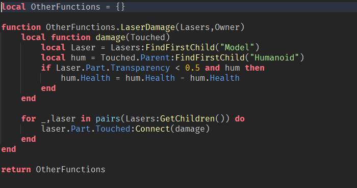